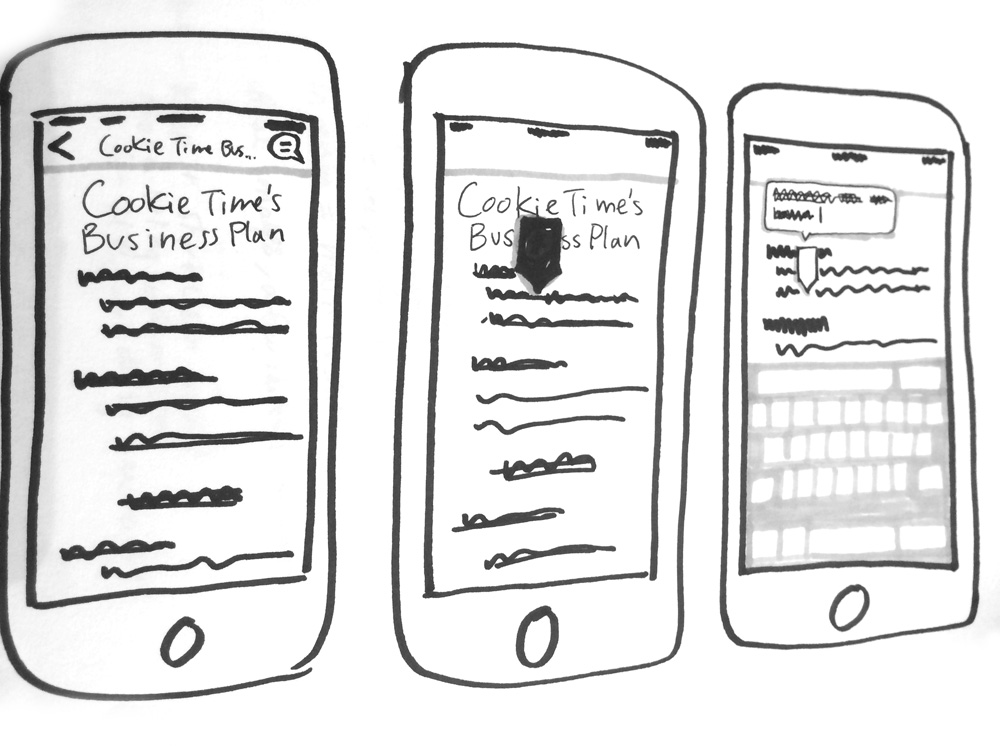

Centro Community Partners
Introduction
Centro Community Partners mission is to help communities grow by matching small business entrepreneurs with volunteer business advisors. They came to our team for a mobile app to improve advisor's communication with their entrepreneurs and improve advisor efficiency.
The goal was to create an app that could be integrated with their existing Business Planning Tool. My partner and I created a concept that would include real time updates of their entrepreneur's progress, the ability to create notes on their work, and messaging features.
Process
I spent time learning about Centro's needs and interviewing business advisors who would be using the app. Through this process I uncovered the following pain points:
- Lack of knowledge of when entrepreneurs made changes to their business plan - this meant that advisors were sometimes ill prepared for advising sessions and unaware of whether entrepreneurs were keeping up with their work
- Disorganized communications - Advisors were following up with their entrepreneurs through emails, texts and other messages. This made it hard for them to refer back to messages or know whether messages were recieved.
- Need for constant reminders - Advisors need to remind their entrepreneurs of appointments, but would sometimes forget. There was also a problem of reminder messages getting lost in entrepreneurs' inboxes.
I then moved on to sketching to begin generating and testing ideas. I tackled the app dashboard, which would contain the main navigation, as well as a feature that would allow advisors to create notes about their entrepreneur's business plan
App Structure

Dashboard Sketches
Possible dashboard layouts
Note Flow Sketches
Flow 1- Creating a note on a separate screen
Flow 2- Creating a marker linked to a note
Initially I wasn't sure whether to follow an annotation model, or create simple text notes that were linked to the entrepreneur's business plan. One of the problems, was that the business plan was very content heavy, but was presented as a single piece, which was unwieldy on mobile (based on usabilty feedback). This made it difficult to keep notes in context. After breaking the business plan into logical sections, the text note pages were more contextualized, while allowing for longer notes.